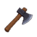
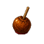
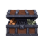

11 October 2026 · Latest Release
4.1.3.9
More Rare Gathering Finds
Bird Nests, Gem Bags and Underwater Chests use a new resource-level curve. At the top resource, unboosted rates rise from 40 to 70 nests/hour, 30 to 52.5 bags/hour, and 24 to 42 chests/hour. Pet and armor bonuses still multiply these rates. Faster actions do not directly increase finds per hour.
This is a curved adjustment, not a flat 75% increase across all resources. At level 100 Woodcutting, the unboosted estimate is about 52.37 nests/hour, up from 35.31.
Rare Gathering Formula and Node Rates
Previous resource factor (linear):
0.35 + 0.65 * (L / Lmax)4.1.3.9 resource factor (exponential):
0.35 * 5^(L / Lmax)Full hourly-rate formula:
Finds per hour = B * 0.35 * 5^(L / Lmax)
* (1 + P) * (1 + G)L is the node's required level, not your character level. Lmax is the highest node requirement: 122 for Woodcutting and Mining, 128 for Fishing. B is 40 for Bird Nests, 30 for Gem Bags, and 24 for Underwater Chests. P is the matching pet treasure-find bonus (1 for +100%); G is the sum of matching armor treasure-find bonuses, expressed as a decimal.
These tables show expected finds per productive gathering hour with no pet or armor bonuses, rounded to two decimals. They are averages, not guaranteed hourly counts. For example, a matching +100% pet doubles every displayed rate; armor bonuses multiply that result. Gathering speed does not directly multiply these rates.

Woodcutting
9 nodes
| Node | Required Level | Finds/Hour | Increase (%) |
|---|---|---|---|
| Tree | 1 | 14.19 | -0.19% |
| Birch Tree | 15 | 17.06 | -0.77% |
| Aspen Tree | 30 | 20.80 | +1.98% |
| Redwood Tree | 40 | 23.73 | +5.35% |
| Ebony Tree | 50 | 27.08 | +9.82% |
| Elder Tree | 70 | 35.25 | +21.90% |
| Frozen Tree | 80 | 40.22 | +29.54% |
| Abyssal Grove | 100 | 52.37 | +48.30% |
| Sunken Grove | 122 | 70.00 | +75.00% |
Mining
11 nodes
| Node | Required Level | Finds/Hour | Increase (%) |
|---|---|---|---|
| Copper Vein | 1 | 10.64 | -0.19% |
| Glyphstone Vein | 5 | 11.22 | -0.74% |
| Iron Vein | 15 | 12.80 | -0.77% |
| Coal Vein | 20 | 13.67 | -0.19% |
| Gold Vein | 30 | 15.60 | +1.98% |
| Cobalt Vein | 40 | 17.80 | +5.35% |
| Titanium Vein | 50 | 20.31 | +9.82% |
| Mythril Vein | 70 | 26.44 | +21.90% |
| Glacial Vein | 80 | 30.17 | +29.54% |
| Abyssalite Vein | 100 | 39.27 | +48.30% |
| Aeonite Vein | 122 | 52.50 | +75.00% |
Fishing
16 nodes
| Node | Required Level | Finds/Hour | Increase (%) |
|---|---|---|---|
| Minnow | 1 | 8.51 | -0.18% |
| Perch | 5 | 8.95 | -0.71% |
| Salmon | 10 | 9.53 | -0.97% |
| Carp | 20 | 10.80 | -0.33% |
| Pike | 30 | 12.25 | +1.60% |
| Eel | 45 | 14.79 | +6.53% |
| Barracuda | 60 | 17.86 | +13.68% |
| Sea Snake | 75 | 21.57 | +22.97% |
| Anglerfish | 85 | 24.46 | +30.38% |
| Octopus | 90 | 26.05 | +34.47% |
| Frozen Tuna | 100 | 29.54 | +43.47% |
| Deepfin | 110 | 33.49 | +53.59% |
| Razorjaw | 114 | 35.22 | +57.99% |
| Abyssal Angler | 118 | 37.04 | +62.58% |
| Relicfin | 124 | 39.94 | +69.87% |
| Gravemaw | 128 | 42.00 | +75.00% |
Gathering Chest Chances Reach 90%
Each gathering-boss chest size now reaches a 90% chance at the top of its damage band, up from 75%. On a miss, every smaller size is tried in descending order at 90% each. There is still at most one chest per attempt.
At the top of the largest band, the outcomes are 90% large, 9% medium, 0.9% small and 0.1% no chest. The chance for a newly entered size still starts at 5%.
Gathering Boss Damage Thresholds
The same damage bands apply to Elder Treant, Kraken and Stone Golem. D is damage in one attempt; p is the desired primary chest chance as a decimal (0.85 means 85%). L and H are the lower and upper damage limits of the selected chest band.
p = 0.05 + 0.85 * clamp((D - L) / (H - L), 0, 1)
D = L + (H - L) * (p - 0.05) / 0.85Round damage up to the next whole point. At zero damage, the chance is zero. Minor uses L = 0, H = 250,000; regular uses L = 250,000, H = 1,500,000; Grand uses L = 1,500,000, H = 2,500,000.
| Chest Chance | Damage Required |
|---|---|
| 5% | 1 |
| 25% | 58,824 |
| 50% | 132,353 |
| 75% | 205,883 |
| 80% | 220,589 |
| 85% | 235,295 |
| 90% | Next band at 250,000 |
| Chest Chance | Damage Required |
|---|---|
| 5% | 250,000 |
| 25% | 544,118 |
| 50% | 911,765 |
| 75% | 1,279,412 |
| 80% | 1,352,942 |
| 85% | 1,426,471 |
| 90% | Next band at 1,500,000 |
| Chest Chance | Damage Required |
|---|---|
| 5% | 1,500,000 |
| 25% | 1,735,295 |
| 50% | 2,029,412 |
| 75% | 2,323,530 |
| 80% | 2,382,353 |
| 85% | 2,441,177 |
| 90% | 2,500,000 |
Minor is selected below 250,000 damage; regular from 250,000 to below 1,500,000; Grand from 1,500,000 onward. Minor and regular approach 90% but switch to the next band at the exact upper limit, where that larger chest starts at 5%. Grand reaches 90% at 2,500,000 damage and stays capped there.
These percentages describe the primary roll for the selected chest size. If it misses, each smaller size is tried in descending order at 90%, with at most one chest awarded. At 2,500,000 damage or more, the final outcomes are 90% Grand, 9% regular, 0.9% Minor and 0.1% no chest.
Ashlyn's Chest Chance Keeps Climbing
The chance remains 75% at 1.5 million damage per attempt, then rises linearly to 90% at 3 million. For example, 2 million damage gives 80% and 2.5 million gives 85%. Damage above 3 million does not increase this chance further.
Ashlyn's Damage Thresholds
D is damage in one attempt; p is the desired chest chance as a decimal. The first formula applies up to 75%; the second covers 75% to 90%.
For 0 < p <= 0.75:
D = 1,500,000 * p / 0.75
For 0.75 < p <= 0.90:
D = 1,500,000 + 1,500,000 * (p - 0.75) / 0.15| Chest Chance | Damage Required |
|---|---|
| 5% | 100,000 |
| 25% | 500,000 |
| 50% | 1,000,000 |
| 75% | 1,500,000 |
| 80% | 2,000,000 |
| 85% | 2,500,000 |
| 90% | 3,000,000 |
Damage of 3,000,000 reaches the new 90% cap. More damage does not improve this roll. Zero damage gives zero chance; a chest is never guaranteed.
Nine New Zone Quests
Questlines → General now groups Zone Quests by zone. Nine new quests bring each zone to two quests, including boss objectives and additional gold and equipment rewards.
Delete Account
The Account tab now offers permanent account deletion, including progress and purchases. It requires typing DELETE twice. Reset Progress remains a different operation.

Food Notifications
A new Food notification toggle in Account is enabled by default. The game estimates when food will run out during a fight and schedules a warning a few minutes beforehand. Notification permission is required; the estimate is not a guarantee.
Community Center Refreshes
Community Center bonuses refresh when opening the game, then every 30 minutes.
Keep Individual Ammo Rarities
Arrows and spells can now be locked by rarity using the lock on each rarity row, so selected tiers can be reserved while others remain available.
Full Hunter's Lodge Count
Hunter's Lodge displays the full Total Vanquished count.
Gathering Potion Pause Correction
The release fixes gathering potions counting down in the background while another skill is active.

Offline Drop Quantities
Offline rewards with quantity ranges now use their fractional average rather than rounding that average down first. A 1–2 drop therefore averages 1.5 items per successful drop, with final quantities rounded probabilistically.
Potion Replacement Confirmation
The release fixes some Replace Potion confirmation prompts closing immediately.
Additional Release Changes
Summoning Pauses Production Potions
Rune and quest-relic summoning is excluded from Production Potion consumption. Summons retain their fixed 30-second duration.
Offline Combat Recalculates at Level-Ups
Offline and background combat recalculate player stats when combat skills gain levels, so later kills use the updated stats.
Active-Time Accounting
Offline activity totals and skilling-pet rolls now use time actually spent working. Production that runs out of materials no longer counts the entire absence as productive time.
Gathering Pet Rewards
Woodcutting double-resource and triple-log effects can both apply. Offline extra-resource rolls use probabilistic rounding, and gathering XP potion bonuses are included in extra-resource XP.
Cloud Tool Slots
Cloud loading preserves empty tool slots. Community Center state is also merged in additional cloud-recovery paths.
Forge and Inventory Handling
Forge One uses its dedicated plan calculation. Frozen Heart Pendant is treated as an all-style item in equipment presentation. Offline combat stopping no longer clears the Auto Fight preference.